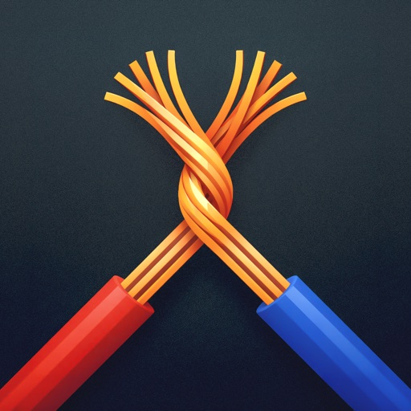

Before You Start
- Confirm you are on macOS 13+ with Apple Silicon.
- Get your output destination ready (RTMP URL/key or HLS path).
- Use a livestream source rather than a prerecorded video.

Back ChannelmacOS Livestream Bridge
Back Channel turns live web streams into RTMP sources. It is designed for producers, newsroom teams, and creators who need to route livestream sources into RTMP or HLS workflows simply and reliably.
Back Channel is a MacOS app that converts livestreams to RTMP or HLS.

Everything you need to go from source URL to reliable output.
Use the CLI for repeatable runs, remote operation, and scripted diagnostics. It runs the same core pipeline as the app.
Run the installer included in the app bundle. By default it installs to ~/.local/bin.
"/Applications/Back Channel.app/Contents/Resources/bin/install-cli.sh"Then verify installation:
backchannel --helpbackchannel \
--source-url "https://www.youtube.com/watch?v=YOUR_ID" \
--format rtmp \
--rtmp-url "rtmp://127.0.0.1/live" \
--mode compatible \
--buffer-seconds 15 \
--disk-buffer true \
--auto-startbackchannel ... --extended-logging true > ~/Downloads/backchannel-run.log 2>&1Early Development Warning
Back Channel is very early and has not been extensively tested. Use at your own risk.
Downloads are served from GitHub Releases. The button above automatically targets the latest
Back-Channel-<version>.zip asset.